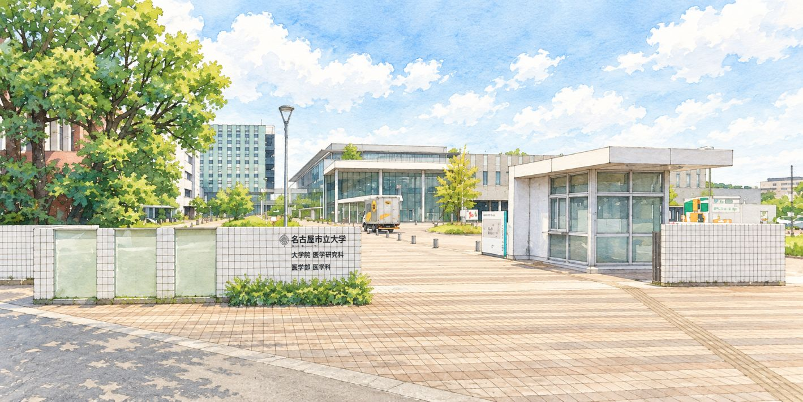

阳明学区 数字传阅板 令和8年(2026年) 10月号

秋意渐浓，迎来了宜人的季节。大家过得怎么样呢？
本期汇集了11月的瑞穗区民祭、10月的药学祭・阳明跳蚤市场等秋季活动信息。此外，还包含了10月起的大件垃圾规则变更、恳请大家协助红羽毛联合募捐等与生活息息相关的重要通知。请务必看到最后。
瑞穗区民祭 2026
会场是名古屋市博物馆的停车场和前庭。舞台表演、模拟店铺、抽奖会等，请与家人一起享受秋天的美好一天！
【日期】 11月7日(六) 10:00〜15:00
【会场】 名古屋市博物馆 停车场・前庭
【交通】 地铁樱通线「樱山站」4号出口
※雨天中止。当天8:00起，可拨打名古屋导览热线（052-953-7584）确认是否举办
参加趣味抽奖会，需要《名古屋宣传报》10月号瑞穗区版16面的「参加券」。
第76届 药学祭
在名古屋市立大学田边通校区举办2天。同期还举办「阳明跳蚤市场」！
【日期】 10月24日(六)・25日(日) 各10:00〜19:00
【会场】 名古屋市立大学 田边通校区（瑞穗区田边通3-1）
【嘉宾】 小竹正义感(24日)／Ironhead(25日)
※9:30起在各摊位活动发放整理券。无停车场
🛍️ 第18届 阳明跳蚤市场（同期举办） 🔽
日期： 10月24日(六) 10:00〜（商品售完即结束）
会场： 药学祭会场（市大药学系 田边通校区）
主办： 阳明跳蚤市场事务局・名古屋市立大学药学祭执行委员会
※不可使用药学系校园的停车场。
同时也在招募出摊商家。详情请参阅传阅板原件。
10月起改变的日常生活规则
有与生活息息相关的重要变更，请务必确认。
🗑️ 大件垃圾的对象与手续费将调整（10/1〜） 🔽
从10月1日(四)起，「装不进45升容量指定垃圾袋的物品」将成为大件垃圾的对象。能装进指定袋的物品将作为「可燃垃圾」「不可燃垃圾」「塑料资源」收集。
主要手续费调整
- 衣柜：1,000日元 → 2,500日元
- 自行车：500日元 → 1,000日元
- 晾衣架：500日元 → 250日元（降价）
- 暖风机：1,000日元 → 500日元（降价）
※用胶带封住袋口、套两层袋、袋子破损的，均属于大件垃圾。
申请：大件垃圾受理中心 0120-758-530（周一〜周五 9:00〜17:00，节假日可）
🚗 生活道路法定时速降至30km（9/1起施行） 🔽
没有中央线或中央分离带的「生活道路」，法定时速已从60km/h下调至30km/h。
※设有最高时速指示标志的道路，以指示速度为准。
在南海海槽地震中生存
〜提高瑞穗区的防灾能力〜
发生间隔约为100〜150年。距上次已过去80多年。现在正是做好准备的时候。
📊 名古屋市・瑞穗区的灾害预想 🔽
名古屋市的灾害预想（最大级别）
- 死亡人数：最多6,700人
- 建筑物全毁・烧毁：约66,000栋
瑞穗区的晃动
根据灾害预测地图，大部分地区为震度6弱以上，区西部预计震度6强。阳明学区预计为震度6弱。山崎川西侧及天白川周边是液化危险性较高的地区。
🛡️ 现在就能做的准备 🔽
物资储备： 实践滚动储备（用掉的及时补购，始终保持稍多一点）。
家具防倾倒： 阪神・淡路大地震约8成遇难者死于房屋倒塌或家具倾倒导致的压埋、窒息。请固定家具并重新考虑摆放位置。
自助与互助： 被埋或被困时的救助，自力34.9%、家人31.9%、朋友邻居28.1%，而救援队仅1.7%。邻里互助能救命。
【重要】防范犯罪通知
来自阳明派出所通讯・瑞穗警察署的信息。请注意。
🏠 阳明学区入室盗窃多发
瑞穗区内共发生11起入室盗窃，其中超过半数6起发生在阳明学区。无论是否在家，请务必锁好门窗。
📞 谨防退税诈骗・特殊诈骗 🔽
假冒区政府职员、以退税名义进行的可疑电话多发。爱知县内退税诈骗已发生379件（同比+215件），受害总额约达10亿8,639万日元。
- 电话中提及「医疗费」「退税」「钱会退回来」时，应怀疑是诈骗
- 政府机关绝不会指示操作ATM
- 请利用来电答录设置或带防骗功能的电话机
🔒 空宅盗窃・地下兼职对策 🔽
严加防范空宅盗窃
- 务必锁好门窗
- 警惕从2楼或公寓低层阳台侵入
- 活用雨窗、卷帘、防盗摄像头、可视门铃
- 家中不要存放大量现金或贵重物品
不要让地下兼职毁掉人生
即使是望风、仅仅是介绍也算同罪，会被逮捕。即使是前辈或朋友邀请也不可答应。出售银行账户、手机属于犯罪。
第2届 交流节 in 密柑山
免费入场。适合全家同乐的活动丰富多彩。
【日期】 10月31日(六) 10:00〜13:00（免费入场）
【会场】 名古屋市立大学医学部附属康复医院 1F 福祉运动中心体育馆
【同期举办】 市民公开讲座 13:00〜14:00（同会场）
自制沙拉酱、拍照、气球艺术、职业体验、糖果赠送等
老年・福祉通知
阳明福祉的活动安排与便利的上门窗口介绍。
🗓️ 阳明福祉 活动安排（10月〜） 🔽
老年人餐会： 社区中心大会议室 10月6日(二)等
Sunlight沙龙（散步会）： 10月8日(四) 竹岛水族馆・午餐・温泉
各沙龙： 善进寺・八胜・正及・田边樱・松荣・菜园・二叶盒咖啡 等
※老年人餐会、Sunlight沙龙需提前报名。
※学区外或未加入町内会者，敬请协助缴纳赞助会费（每年1,000日元）。
报名・咨询：080-2071-4844
💳 个人编号卡 上门窗口（10/17） 🔽
日期： 10月17日(六) 11:00〜17:00（无预约也可，提前预约优先）
会场： 阳明社区中心 1F 和室
对象为：想申请个人编号卡但不清楚手续的人、有效期临近想申请更新的人。对象需在名古屋市有居民登记（首次申请、有效期不足3个月的更新、持交付通知书者）。遗失补发・仅电子证明书不在对象范围内。
预约・咨询：050-3612-8553
恳请协助红羽毛联合募捐
让我们的街道变得更好的机制。恳请协助。
【期间】 2026年10月1日〜12月31日
【分配】 约3成用于爱知县内的社会福利设施整备及灾害支援等，约7成用于让瑞穗区变得更好的活动。
募捐袋与红羽毛正在传阅中。恳请协助。
除上门募捐外，也欢迎参加区民祭、商业设施内的募捐活动，或使用红羽毛捐赠型自动售货机。
咨询：名古屋市瑞穗区联合募捐委员会（瑞穗区社会福利协议会内）052-841-4063